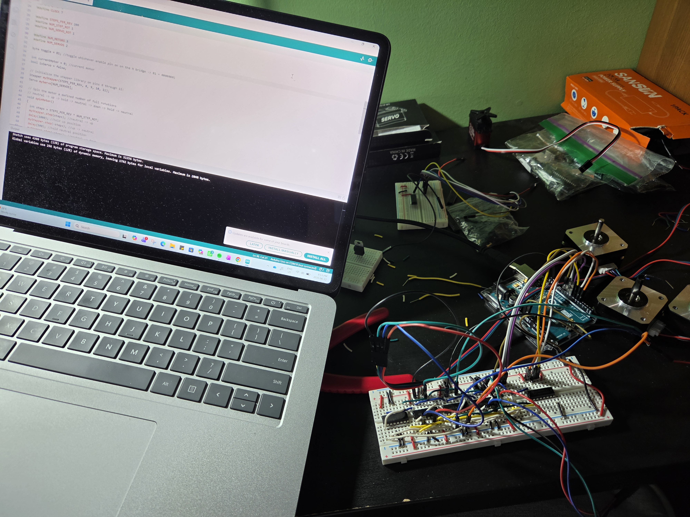
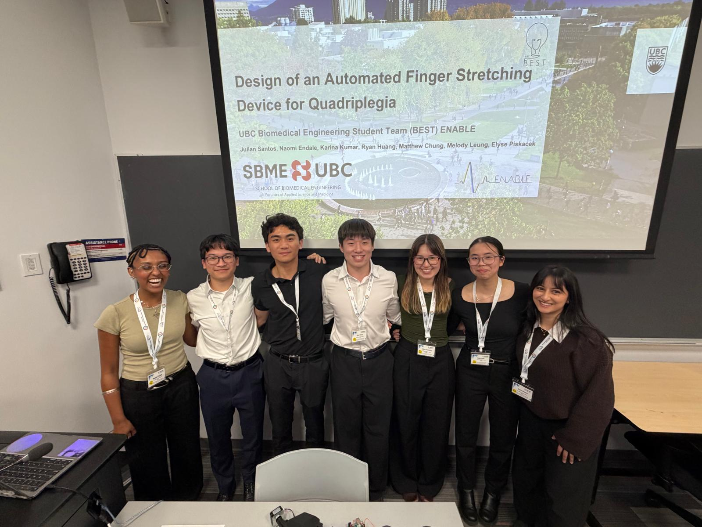
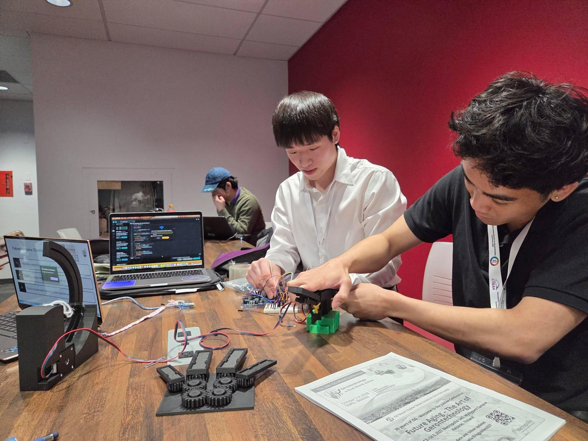
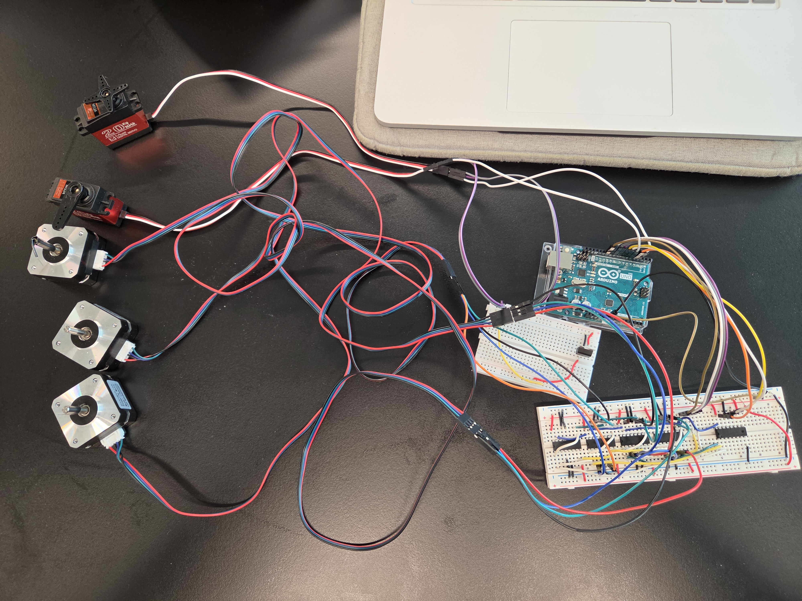
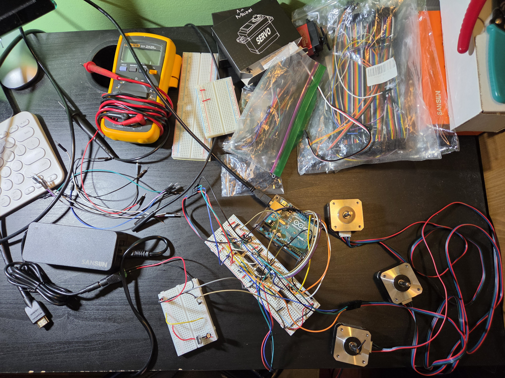
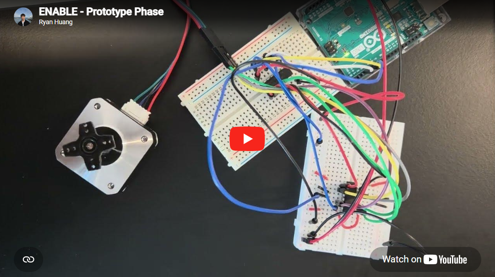
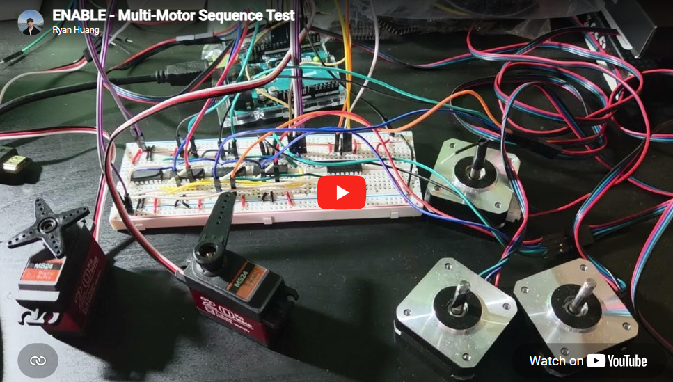

Project: Automated Finger Stretching Device for Quadriplegia
Publication Link
Key Skills: C/C++, State Machines, Bitwise Operations, PWM Control, Motor Drivers, Circuit Design, Power Electronics, Hardware Debugging (Oscilloscope, Multimeter)
Responsibilities:
- As the Electrical & Embedded Team Lead, I guided the development of the device's electrical architecture and embedded control system. I also supported teammates with firmware and hardware integration, providing new perspectives from my previous project experience.
- In response to the client's request to improve sensorimotor mapping, I led the development of a multi-motor architecture that enabled independent control of each finger, enhancing muscle engagement. I researched motor sizing, torque requirements, and translated client requirements to technical design specifications. I also proposed the use of shift registers to reduce wiring complexity and effectively control multiple motors. Finally, I assembled and validated the electrical system through iterative circuit testing and debugging.
- Our research abstract was peer-reviewed and published in the Gerontechnology Journal, highlighting the innovative nature of our design and its potential impact on assistive technology for individuals with quadriplegia. We also presented our design at the International Society of Gerontechnology Conference, where we were the only undergraduate design team to present alongside PhD researchers and professionals from around the world.







Project Overview: Our team partnered with Technology for Living to develop an automated finger stretching device for a client with quadriplegia. Targeting an unmet need in existing solutions, the device focuses on providing dynamic support over traditional resistive-based stretching. This enables consistent, hands-free stretching routines without the assistance of a caregiver which is pivotal in restoring user independence and reducing spasticity.
Highlight: The value of this project is the importance of client consultation. Throughout the iterative design process, we incorporated feedback from our client to make sure what we design is not only functional but also comfortable to use. It's not as simple as getting the device to work, we had to ensure mechanisms and fail-safes are in place to ensure the safety of the user.
Design is not just about functionality, but about creating solutions that integrate seamlessly into everyday use.
Team Background: ENABLE is a subteam of the UBC Biomedical Engineering Student Team (BEST), a student-led design team focused on developing affordable, client-centered assistive devices in partnership with organizations such as Technology for Living and the Tetra Society of North America.